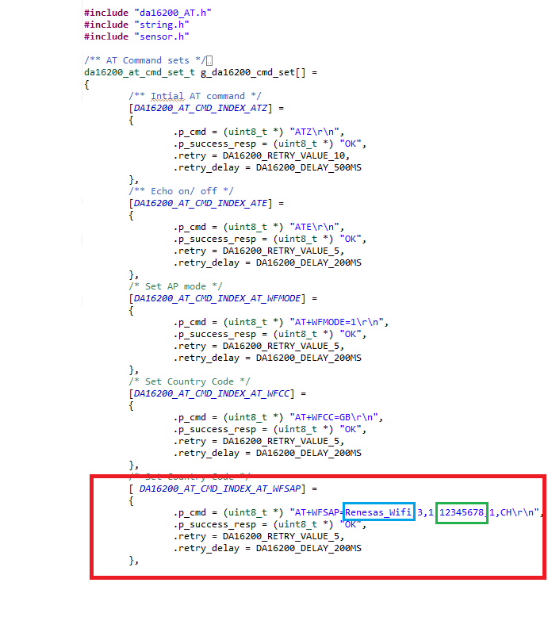

Here we will guide you through debugging this lab project and will provide details on how to verify the working on the project.
4.1 Build the project
To build the project please [Right-Click] the project and click Build Project.
4.2 Hardware
Before debugging the project, please ensure headers are fitted to the header H1 in positions 1-2
(VBATT-VDD) & 4-5 (VDD_RL78 - VDD).
Finally, connect the E2-Lite - the user does not need to connect batteries for this lab as we will supply
the board via the debugger.
4.3 Debugging the project
To start a debug session please select the project by clicking on it and clicking the debug icon along the menu bar.
Finally, Click the run icon, first, it will run to main, click the run icon again and the project should start running.

4.4 Operating project
Now the project is running you can cycle through the different output states.
-
You can set the name and password for the WiFi. The blue box in the following image indicates the Wi-Fi name and the green highlighted field indicates the passcode.
 -
Connect your laptop to the WiFi you created.
-
Click the link Webpage and that will take you to the webpage you have created.
-
You can test this by placing your hand on the sensor making it give a false fluctuation in sensor values.
4.5 Restoring To It's Old Glory Step (OPTIONAL)
Now that the project is successfully executed, the new project is programmed into the hardware. You can keep the current project running and it will constantly host the webpage as if you want to go back to the previous version of the board with the sensors' value updated on the display, follow the instructions in this step.
To acquire the free flash file of the project that the board came with, please click here to download & extract the contents of the .zip archive to your desired location.
-
Open Renesas Flash Programmer. Click on File->New Project. This will open up new project dialog, make the following selection inside.
Microcontroller: RL78/G2x
Project Name: Anything suitable
Project Folder: Anything suitable
Tool: E2 Emulator Lite
Now, Click on Tool Detail and Select 3.3V. Check that the project is not running in e2 studio adn hit Connect.
-
Unzip the downloaded folder and store RL78G23_IAQ_DEMO.mot binary file to a desried location. Now,add this location as the program file by clicking on browse button as shown below.
-
Finally, Click on Big start button and that will flash the binary.
- Disconnect E2Lite and add Batteries. All done! This should Restore the board to it's old version.